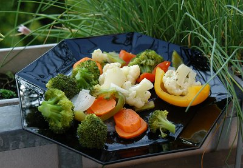

| Zutaten für 4 Personen: | |
| 1 | rote Peperoni |
| 1 | grüne Peperoni |
| 1 | gelbe Peperoni |
| 1 | Rüebli |
| 1 | Zucchetti |
| 2 | kleine Zwiebeln |
| 150 g | Broccoliröschen |
| 150 g | Blumenkohlröschen |
| 2-3 dl | Gemüsebouillon |
| 1 Zweig | Thymian |
| 100 g | Roquefort |
Peperone waschen, halbieren und entkernen.
Karotte in schräge, dünne Scheiben und Zucchetti in Stäbchen schneiden.
Zwiebeln schälen und achteln.
Gemüsebouillon mit Thymianzweiglein aufkochen. Vorbereitetes Gemüse zusammen mit den Broccoli- und Blumenkohlröschen auf den Siebeinsatz in der Pfanne legen und bei nicht allzu grosser Hitze garen.
Knackig gekochtes Gemüse auf vorgewärmte Teller anrichten, mit kleinen Käsewürfeln garnieren und mit etwas Gemüsebouillon beträufeln.
Tipp: Broccoli- und Blumenkohlröschen können als frisches Gemüse, aber auch in Form von blanchierten tiefgekühlten Röschen verwendet werden. Zu diesem Gericht passt am besten frisches, knuspriges, dunkles Brot.
Eine Zeitung
Hat am 16.7.2009 toll geschmeckt. RE